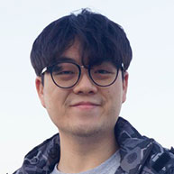

“Conservation is a state of harmony between men and land.”Aldo Leopold
The Speakers
and Vice President,
Partnerships and Engagement, SMU
Temasek Foundation
Ministry of Sustainability
and the Environment & Ministry of Transport

College of Integrative Studies, SMU
Smart & Sustainable Building Technologies,
Energy Research Institute @ NTU (ERI@N)
Academic Director (SMU-X)
Circular Urban Food System, Singapore-ETH Centre;
Department of Humanities, Social and
Political Sciences (DGESS), ETH Zurich
Unravel Carbon
Holland Bukit Timah GRC
LepakInSG
APAC (Meta)
Royal Golden Eagle
Alterpacks
School of Computing and Information Systems
& College of Integrative Studies, SMU
National University of Singapore, and
Associate Professor, Faculty of Law,
University of Gadjah Mada, Indonesia
Climate Impact X
Evolution Data Centres
Aquatera Asia
CIS, SMU

Mr. Julian Oh
Project Leader Project Reef Alert
Adjunct Faculty, Sustainability Law &
Innovation and Big Questions, SMU
Lily & Lou

CIS, SMU